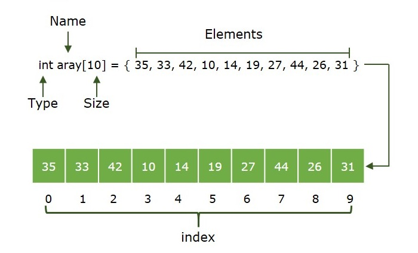

Array
Array — bu bir xil o'zgaruvchi turidagi elementlar to'plami bo'lib, ular ketma-ket xotira joylashuvlarida saqlanadi. Bu dasturlashda eng mashhur va oddiy ma'lumot tuzilmalaridan biridir.
Illustration
Array:
An Array is a collection of items stored at contiguous memory locations. The idea is to store multiple items of the same type together. This makes it easier to calculate the position of each element by simply adding an offset to a base value, i.e., the memory location of the first element of the array (generally denoted by the name of the array).
The diagrammatic representation of the Array is given below:

Queue:
A Queue is a linear structure that follows a particular order in which the operations are performed. The order is First In First Out (FIFO). A good example of a queue is any queue of consumers for a resource where the consumer that came first is served first. The difference between stacks and queues is in removing. In a stack we remove the item the most recently added; in a queue, we remove the item the least recently added.
The diagrammatic representation of the Queue is given below:

Stack:
A Stack is a linear data structure in which elements can be inserted and deleted only from one side of the list, called the top. A stack follows the LIFO (Last In First Out) principle, i.e., the element inserted at the last is the first element to come out. The insertion of an element into the stack is called push operation, and the deletion of an element from the stack is called pop operation. In stack, we always keep track of the last element present in the list with a pointer called top.
The diagrammatic representation of stack is given below:

Below is the tabular representation of the difference between Array, Stack, and Queue:
| Queues | Array | Stack |
|---|---|---|
| Queues are based on the FIFO principle, i.e., the element inserted at the first, is the first element to come out of the list. | In the array the elements belong to indexes, i.e., if you want to get into the fourth element you have to write the variable name with its index or location within the square bracket eg arr[4] | Stacks are based on the LIFO principle, i.e., the element inserted at the last, is the first element to come out of the list. |
| Insertion and deletion in Queues takes place only from rear and front respectively. | Insertion and deletion in array can be done at any index in the array. | Insertion and deletion in stacks take place only from one end of the list called the top. |
| Queue has a dynamic and fixed size. | Array has a fixed size. | Stack has a dynamic and fixed size. |
| Queue can contain elements of different data type. | Array contains elements of same data type. | The stack can contain elements of the different data types. |
| Different types of Queues are circular queue, priority queue, doubly ended queue | Different types of Arrays are 1D, 2D, etc | Stack has only one type. |
Video Explanation
Code Example
// Array yaratish
let fruits = ["apple", "banana", "mango"];
console.log()
// Element qo'shish
fruits.push("orange"); // ["apple", "banana", "mango", "orange"]
// Element o'chirish
fruits.pop(); // ["apple", "banana", "mango"]
// Element qidirish
let index = fruits.indexOf("banana"); // index = 1
// Elementni o'zgartirish
fruits[1] = "kiwi"; // ["apple", "kiwi", "mango"]